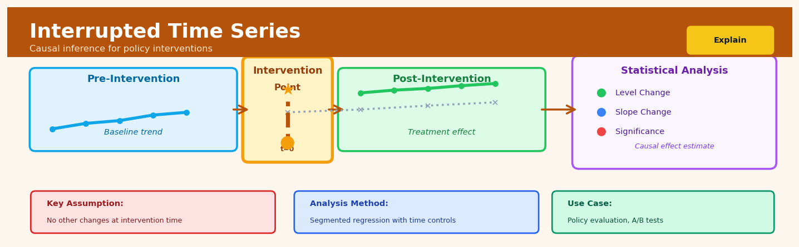

Interrupted Time Series#


The biggest mistake I see teams make with interrupted time series is not collecting enough pre-intervention observations. You need at least 8-10 time points before the intervention to reliably model the baseline trend, otherwise you're just guessing what would have happened. Also, always check if something else changed at the same time as your intervention because ITS assumes your policy was the only thing that shifted at that exact moment.
The 60-Second Version#
What it does: Interrupted Time Series tells you whether a specific event—like launching a new policy, running a campaign, or changing a price—actually caused a measurable change in your outcome, not just correlated with it.
When to use it: You’ve implemented something at a known date, you have regular measurements before and after (ideally 8+ points each side), and you need to prove it worked beyond natural fluctuations or trends already underway.
What you get back: A statistical verdict on whether your intervention shifted the outcome immediately, changed its trajectory over time, or did nothing at all—with confidence intervals so you know if the effect is real or noise.
Difficulty |
Moderate |
Typical runtime |
Seconds on years of data |
What you bring |
Time-stamped outcome data with a clear intervention date |
What you get |
Estimated causal effect: level change, slope change, and significance |
Heuristix bucket |
Explain — Causal Analysis & Interpretation |
You cannot use this method if your outcome was already unstable or if other major changes happened around the same time—it assumes the intervention is the only disruption.
Learning Objectives#
After reading this chapter, a business user will be able to:
Identify situations where Interrupted Time Series is the right choice—such as evaluating a policy change, marketing campaign launch, or operational intervention—and distinguish these from scenarios requiring A/B tests or other methods.
Interpret ITS results by explaining whether an intervention caused an immediate jump, a change in trend direction, or both, and translate these findings into plain language for executive stakeholders.
Decide whether to scale, modify, or roll back an intervention based on the magnitude and statistical significance of observed level and slope changes in the outcome metric.
After reading this chapter, a data scientist will be able to:
Implement an ITS analysis by specifying the correct regression model structure, handling autocorrelation through appropriate error term adjustments, and accounting for seasonality in the pre-intervention period.
Select the optimal number of pre- and post-intervention observations needed to achieve adequate statistical power while recognizing the trade-offs between longer baselines and relevance of historical data.
Diagnose common ITS pitfalls including insufficient pre-trend periods, concurrent confounding events, anticipation effects, and violations of the parallel trends assumption through visual inspection and formal statistical tests.
Overview#
Interrupted Time Series (ITS) is a quasi-experimental research design used to estimate the causal effect of an intervention, policy change, or event that occurs at a known point in time. The method belongs to the family of regression-based causal inference techniques and works by modelling the pre-intervention trend in an outcome variable, then testing whether the intervention produced a statistically significant change in either the level (immediate shift) or slope (gradual change in trajectory) of the outcome series. ITS is particularly valuable when randomised controlled trials are infeasible, unethical, or impractical, and when a sufficiently long time series of observations exists before and after the intervention.
When to Use This#
Use Interrupted Time Series when:
A policy or intervention has a clearly defined implementation date — You need to evaluate the effect of a new regulation, pricing strategy, or operational change that was rolled out at a specific, known time point across all units.
You have sufficient pre- and post-intervention time points — The technique requires multiple observations before and after the intervention (minimum 8–12 per period is a common heuristic, though more is always better) to reliably estimate trends.
Randomisation is not possible — When you cannot randomly assign units to treatment and control groups (e.g., a nationwide policy change affects everyone simultaneously), ITS provides a credible alternative for causal inference.
You expect the intervention to produce an immediate level change, a gradual slope change, or both — The standard ITS model is specifically designed to detect these two types of effects and distinguish between them.
Historical data is available and consistently measured — You have access to archival records or operational data that was collected using a consistent methodology throughout the study period.
Confounding events are unlikely or can be controlled for — The validity of ITS depends on the assumption that no other major events coincided with the intervention that could explain the observed change.
Do NOT use Interrupted Time Series when:
The intervention timing is ambiguous or phased in gradually — If the policy was implemented over several months or the exact start date is unknown, the standard ITS model becomes unreliable.
You have too few time points — With only 3–4 observations before or after the intervention, you cannot reliably estimate trends, and results will be unstable and imprecise.
Major confounding events coincide with the intervention — If a recession, competitor action, or seasonal peak occurs at the same time as your intervention, ITS cannot disentangle the effects without a control series.
The outcome variable is heavily influenced by autocorrelation you cannot model — While autocorrelation can be addressed, extremely complex seasonal or cyclical patterns may require more sophisticated time series methods.
Questions This Answers#
Measuring Policy & Initiative Impact#
Did the new pricing strategy we launched in Q3 actually increase revenue, or would sales have grown anyway?
Our employee wellness program cost £2M to implement — can we prove it reduced sick days beyond normal seasonal patterns?
When we rolled out the new website in March, did conversion rates genuinely improve or just continue their existing trend?
The compliance training we mandated in January was expensive — did workplace incidents actually drop because of it?
Did our sustainability campaign in June shift customer sentiment, or are we seeing the same trend we had before launch?
Comparing Before and After States#
Since the competitor entered our market in August, are we losing share faster than our previous decline rate?
After the data breach in Q2, did customer churn accelerate or stay at historical levels?
We changed suppliers in April to cut costs — did product quality complaints increase more than usual?
When that regulation took effect in September, did our processing times get worse or was that trend already happening?
The new shift pattern started in February — are we seeing productivity gains or just normal seasonal variation?
Forecasting Post-Intervention Outcomes#
If this marketing campaign continues as is, where will our customer acquisition numbers be in six months?
Based on how the policy change affected the first region, what impact should we expect when we roll it out nationally?
The cost-cutting measure improved margins initially — will that improvement hold or fade back to the old trajectory?
Now that we’ve seen three months of the new return policy, should we expect refund rates to stabilize here or keep climbing?
How It Works#
Imagine you’re tracking your teenager’s weekly screen time. For months, it hovers around 35 hours per week—some weeks higher, some lower, but generally steady with a slight upward creep. Then, in mid-March, you implement a new household rule: no phones after 9 PM. Over the following weeks, you notice screen time drops to about 25 hours and starts declining further. But here’s the question: did your rule actually cause the change, or would screen time have dropped anyway—perhaps due to spring sports season starting? Interrupted Time Series answers this by comparing what actually happened after your rule to what would have happened if the trend before your rule had simply continued uninterrupted.
BEFORE INTERVENTION INTERVENTION AFTER INTERVENTION
(establish trend) (known time) (measure change)
│ ↓
40 │ ● POLICY
│ ● ● ENACTED
35 │ ● ● ● │
│ │ ◆
30 │ observed trend ┌─────┼─────────
│ (slight increase) │ │ ◆ ◆
25 │ │ │ ◆
│ actual│ │projected
20 │ drop │ │(if no policy)
└────────────────────────────┼─────┼──────────→ time
Jan Feb Mar Apr May │Jun │Jul Aug
│ │
← pre-period │ post-period →
│
Level change + slope change
(immediate drop + steeper decline)
Step 1: Collect your timeline. You gather measurements of your outcome over time—ideally many observations before and after the intervention point. The more data you have on both sides, the more confident you can be about what’s really happening versus random fluctuation.
Step 2: Mark the intervention moment. You identify the exact point in time when the intervention occurred. This creates a clear “before” and “after” boundary in your data. Everything hinges on knowing precisely when the change was introduced.
Step 3: Fit a trend line to the before period. Using only the pre-intervention data, you establish what the natural pattern looked like—was the outcome rising, falling, or staying flat? Think of this as drawing the path your data was already traveling before anything changed.
Step 4: Extend that trend forward as a projection. You take that pre-intervention pattern and extend it into the post-intervention period as if nothing had happened. This projection becomes your comparison baseline—what would have occurred without the intervention.
Step 5: Fit a new trend line to the after period. Now you look at the actual post-intervention data and establish its pattern. This shows what actually happened after the intervention.
Step 6: Measure the gap between projection and reality. You compare the projected line (business as usual) with the actual post-intervention line. The difference reveals two things: an immediate jump or drop right at the intervention point (level change), and any change in the rate of increase or decrease over time (slope change).
Step 7: Test whether the gap is real or coincidence. Statistical tests determine if the differences you observed are large enough and consistent enough to confidently attribute to the intervention, rather than normal random variation in your data.
The key insight: Interrupted Time Series works because it uses the data’s own history as the control group—you’re comparing what happened to what the data itself suggests would have happened, making the pre-intervention trend your counterfactual.
The Intuition#
Imagine you are monitoring the daily number of workplace accidents at a manufacturing plant. For two years, the plant averages about 12 accidents per month, with a slight downward trend as workers gain experience. Then, on a specific date, the company implements a comprehensive new safety training programme. In the months following the training, you observe that accidents drop sharply to 8 per month and the downward trend accelerates.
The fundamental question ITS answers is: Would accidents have declined this much anyway, or did the training programme cause the improvement? To answer this, ITS essentially asks what the outcome would have looked like if the intervention had never happened. It does this by projecting the pre-intervention trend forward in time to create a counterfactual baseline. Any deviation of the actual post-intervention data from this projected baseline is attributed to the intervention effect.
Think of it like drawing a line through the data points before the intervention and extending that line into the future. If the intervention had no effect, the post-intervention data should continue along this projected path (within random variation). But if the intervention worked, you would see either an immediate jump or drop in the outcome (a level change), a change in the steepness of the trend (a slope change), or both. The beauty of ITS is that each unit serves as its own control — you are comparing the same entity to itself, before and after the intervention, while accounting for pre-existing trends.
The key insight that makes ITS credible for causal inference is the continuity assumption: in the absence of the intervention, the pre-intervention trend would have continued unchanged. This is a strong but often reasonable assumption, particularly when the pre-intervention period is long enough to establish a stable pattern and when no other major events occurred at the intervention point. When this assumption holds, the difference between the observed post-intervention values and the counterfactual projection provides an unbiased estimate of the intervention effect.
The Mathematics#
Problem Setup and Notation#
Let \(Y_t\) denote the outcome of interest measured at time \(t\), where \(t = 1, 2, \ldots, T\) indexes the time periods. The intervention occurs at time \(t = T_0\), dividing the series into a pre-intervention period (\(t < T_0\)) and a post-intervention period (\(t \geq T_0\)).
We define the following variables:
\(T_t\): A continuous variable counting time periods, typically centred or starting at 1
\(X_t\): An indicator variable equal to 0 before the intervention and 1 from the intervention point onwards
\(X_t T_t^*\): An interaction term measuring time elapsed since the intervention, where \(T_t^* = (t - T_0 + 1) \cdot X_t\)
The Basic ITS Regression Model#
The standard segmented regression model for ITS is:
where:
\(\beta_0\): Baseline level of the outcome at \(t = 0\)
\(\beta_1\): Pre-intervention slope (trend in outcome per time unit before intervention)
\(\beta_2\): Immediate level change — the change in outcome level at the intervention point
\(\beta_3\): Change in slope — the difference in trend between pre- and post-intervention periods
\(\epsilon_t\): Error term
The post-intervention slope is given by \(\beta_1 + \beta_3\), representing the new trajectory after the intervention.
Interpretation of Parameters#
The counterfactual outcome at any post-intervention time point \(t \geq T_0\) (what would have happened without intervention) is:
The estimated intervention effect at time \(t\) is the difference between the observed fitted value and the counterfactual:
This shows that the intervention effect grows (or shrinks) over time if \(\beta_3 \neq 0\).
Assumptions#
Linearity: The pre-intervention trend is adequately captured by a linear function of time. Non-linear trends require polynomial or spline extensions.
No confounding at the intervention point: No other event occurred at \(T_0\) that could explain the change in outcome. This is the identification assumption.
Stable unit treatment value assumption (SUTVA): The intervention affects only the series under study, with no spillover effects to other units or time periods.
Independence of errors (basic model): In the simplest specification, errors are assumed independent and identically distributed. This assumption is often violated due to autocorrelation.
No anticipation effects: Units did not change behaviour before the formal intervention in anticipation of its implementation.
Addressing Autocorrelation#
Time series data typically exhibit serial correlation, violating the independence assumption and biasing standard errors. We address this using Newey-West heteroskedasticity and autocorrelation consistent (HAC) standard errors or by explicitly modelling the error structure.
For an AR(1) error process:
where \(|\rho| < 1\) for stationarity. Estimation proceeds via generalised least squares (GLS) or by including lagged dependent variables:
Controlled Interrupted Time Series#
When a control series is available (a comparable unit not exposed to the intervention), we can strengthen causal identification using a difference-in-differences extension:
where \(G_i\) is a group indicator (1 for treatment group, 0 for control). The coefficients \(\beta_6\) and \(\beta_7\) now capture the intervention effects, controlling for common temporal trends.
Power and Sample Size Considerations#
Statistical power in ITS depends on:
Number of time points before (\(n_1\)) and after (\(n_2\)) the intervention
Autocorrelation coefficient \(\rho\)
Magnitude of the true effect relative to residual variance
The effective sample size is reduced by autocorrelation. With AR(1) errors, the variance inflation factor for the level change estimator is approximately:
A minimum of 8 time points per segment is often cited, though 20+ is preferable for detecting slope changes.
Understanding the Mathematics#
The Basic ITS Model#
The equation:
Read it aloud:
“The outcome at time t equals a baseline intercept, plus a coefficient times the time counter, plus a coefficient times the intervention indicator, plus a coefficient times the product of time and the intervention indicator, plus random error.”
What each symbol means:
\(Y_t\) = the outcome value we’re measuring at time period t (e.g., hospital admissions)
\(\beta_0\) = the starting baseline level before intervention
\(\beta_1\) = the pre-intervention trend (how much Y changes per time period)
\(T_t\) = time counter (1, 2, 3, 4…)
\(\beta_2\) = immediate level change right when intervention happens
\(X_t\) = intervention switch (0 before intervention, 1 after)
\(\beta_3\) = change in slope after intervention (trend difference)
\(\epsilon_t\) = random variation we can’t predict
A concrete numerical example:
A hospital implements a new triage protocol in month 12. Before the protocol, average monthly ER wait time is 45 minutes (\(\beta_0 = 45\)), increasing by 0.5 minutes each month (\(\beta_1 = 0.5\)). The protocol immediately drops wait times by 8 minutes (\(\beta_2 = -8\)) and reverses the trend to decrease by 0.3 minutes monthly (\(\beta_3 = -0.8\), making post-intervention slope \(0.5 - 0.8 = -0.3\)).
For month 15 (3 months post-intervention, so \(T_{15} = 15\) and \(X_{15} = 1\)):
Why this equation matters:
This equation separates immediate shock effects from gradual trend changes, letting us distinguish between a one-time improvement and sustained systemic change—critical for deciding whether an intervention truly works or just creates temporary disruption.
Counterfactual Prediction#
The equation:
Read it aloud:
“The predicted counterfactual outcome at time t equals the baseline intercept plus the pre-intervention slope times the time counter.”
What each symbol means:
\(\hat{Y}_t^{counterfactual}\) = what would have happened without intervention
\(\beta_0\) = baseline starting level
\(\beta_1\) = pre-intervention trend
\(T_t\) = time counter continuing past intervention point
A concrete numerical example:
Using our hospital example, what would month 15’s wait time be if we hadn’t implemented the protocol? We project the old trend forward:
The actual wait time was 32.5 minutes. The intervention effect is \(32.5 - 52.5 = -20\) minutes saved.
Why this equation matters:
Without the counterfactual, we can’t quantify impact—we’d only know wait times decreased, not whether that decrease beat the natural trajectory or merely continued an existing trend.
Treatment Effect#
The equation:
Read it aloud:
“The treatment effect at time t equals the immediate level change plus the slope change multiplied by the number of periods since intervention.”
What each symbol means:
\(\text{Effect}_t\) = total intervention impact at time t
\(\beta_2\) = immediate jump (or drop)
\(\beta_3\) = additional effect accumulating each period
\(T_t^{post}\) = time counter reset to zero at intervention (1, 2, 3… post-intervention)
A concrete numerical example:
At month 15 (3 months post-intervention, \(T_{15}^{post} = 3\)):
At month 20 (\(T_{20}^{post} = 8\)):
The intervention saves more time as months pass because both the immediate drop and the improved trend compound.
Why this equation matters:
This reveals whether benefits grow, stabilize, or fade over time—essential for cost-benefit analysis and determining if the intervention justifies ongoing investment.
The Big Picture#
The mathematics of ITS fundamentally constructs a before-and-after comparison while accounting for pre-existing trends. We need regression rather than simple averages because most real-world outcomes aren’t flat—they’re already rising or falling before we intervene. The model isolates two types of change: instant shifts (did it work immediately?) and trajectory changes (does it keep working?). By extending the pre-intervention trend into the post-period as a counterfactual, we create the comparison group that randomized trials get from control groups. In one sentence: we’re asking whether the line broke differently than it was already bending.
Python Implementation#
import numpy as np
import pandas as pd
import statsmodels.api as sm
import statsmodels.formula.api as smf
from statsmodels.stats.diagnostic import acorr_ljungbox
import matplotlib.pyplot as plt
# ============================================================
# Example 1: Basic ITS Analysis with OLS and HAC Standard Errors
# ============================================================
# Generate synthetic data: monthly hospital admissions
np.random.seed(42)
# 48 months total: 24 pre-intervention, 24 post-intervention
n_pre = 24
n_post = 24
n_total = n_pre + n_post
intervention_point = n_pre # Intervention occurs at month 25 (0-indexed: 24)
# Time variable (1 to 48)
time = np.arange(1, n_total + 1)
# Intervention indicator (0 before, 1 after)
intervention = (time > n_pre).astype(int)
# Time since intervention (0 before intervention, 1, 2, 3... after)
time_since_intervention = np.maximum(0, time - n_pre)
# True parameters
beta_0 = 100 # Baseline level
beta_1 = 0.5 # Pre-intervention slope (gradual increase)
beta_2 = -15 # Level change (immediate drop after intervention)
beta_3 = -0.8 # Slope change (decline accelerates)
# Generate outcome with AR(1) errors for realism
rho = 0.4 # Autocorrelation coefficient
sigma = 5 # Error standard deviation
errors = np.zeros(n_total)
errors[0] = np.random.normal(0, sigma)
for t in range(1, n_total):
errors[t] = rho * errors[t-1] + np.random.normal(0, sigma * np.sqrt(1 - rho**2))
# Outcome variable
admissions = (beta_0 + beta_1 * time +
beta_2 * intervention +
beta_3 * time_since_intervention +
errors)
# Create DataFrame
df = pd.DataFrame({
'month': time,
'admissions': admissions,
'time': time,
'intervention': intervention,
'time_after': time_since_intervention
})
print("="*60)
print("BASIC ITS ANALYSIS: Hospital Admissions")
print("="*60)
print(f"\nData Summary:")
print(f" Pre-intervention periods: {n_pre}")
print(f" Post-intervention periods: {n_post}")
print(f" Intervention point: Month {n_pre + 1}")
# Fit OLS model with Newey-West HAC standard errors
model = smf.ols('admissions ~ time + intervention + time_after', data=df)
results_ols = model.fit()
results_hac = model.fit(cov_type='HAC', cov_kwds={'maxlags': 4})
print("\n--- OLS Results with HAC Standard Errors ---")
print(results_hac.summary())
# Test for residual autocorrelation
residuals = results_hac.resid
lb_test = acorr_ljungbox(residuals, lags=[4, 8, 12], return_df=True)
print("\n--- Ljung-Box Test for Residual Autocorrelation ---")
print(lb_test)
# Calculate counterfactual and effect at end of study
final_time = n_total
counterfactual_final = (results_hac.params['Intercept'] +
results_hac.params['time'] * final_time)
observed_final = results_hac.predict(df.iloc[[-1]])[0]
effect_final = observed_final - counterfactual_final
print(f"\n--- Intervention Effect at Month {final_time} ---")
print(f" Counterfactual (no intervention): {counterfactual_final:.2f}")
print(f" Observed (fitted): {observed_final:.2f}")
print(f" Estimated effect: {effect_final:.2f}")
# ============================================================
# Example 2: ITS with Autoregressive Error Modelling
# ============================================================
print("\n" + "="*60)
print("ITS WITH AUTOREGRESSIVE ERRORS (Prais-Winsten)")
print("="*60)
# Use GLS with AR(1) errors
from statsmodels.regression.linear_model import GLSAR
# Fit model with AR(1) errors using iterative Cochrane-Orcutt
X = df[['time', 'intervention', 'time_after']]
X = sm.add_constant(X)
y = df['admissions']
# GLSAR automatically estimates rho and transforms the data
glsar_model = GLSAR(y, X, rho=1) # rho=1 means estimate AR(1)
glsar_results = glsar_model.iterative_fit(maxiter=10)
print("\n--- GLS Results with AR(1) Errors ---")
print(f"Estimated autocorrelation (rho): {glsar_model.rho:.3f}")
print(glsar_results.summary())
# ============================================================
# Example 3: Controlled ITS (with comparison group)
# ============================================================
print("\n" + "="*60)
print("CONTROLLED ITS: Treatment vs Control Region")
print("="*60)
# Generate control group data (no intervention effect)
np.random.seed(123)
errors_control = np.zeros(n_total)
errors_control[0] = np.random.normal(0, sigma)
for t in range(1, n_total):
errors_control[t] = rho * errors_control[t-1] + np.random.normal(0, sigma * np.sqrt(1 - rho**2))
# Control group: same baseline trend, no intervention effect
admissions_control = beta_0 + beta_1 * time + errors_control
# Create combined dataset
df_treatment = df.copy()
df_treatment['group'] = 1
df_treatment['group_label'] = 'Treatment'
df_control = pd.DataFrame({
'month': time,
'admissions': admissions_control,
'time': time,
'intervention': intervention,
'time_after': time_since_intervention,
'group': 0,
'group_label': 'Control'
})
df_combined = pd.concat([df_treatment, df_control], ignore_index=True)
# Add interaction terms
df_combined['group_time'] = df_combined['group'] * df_combined['time']
df_combined['group_intervention'] = df_combined['group'] * df_combined['intervention']
df_combined['group_time_after'] = df_combined['group'] * df_combined['time_after']
# Fit controlled ITS model
formula = ('admissions ~ time + intervention + time_after + '
'group + group_time
## Visualisations


## Using This in Heuristix
### What You'll Need
The Interrupted Time Series node expects a **time-ordered dataset** with at least three columns:
- **Date/Time column**: Your time periods (daily, weekly, monthly, etc.)
- **Outcome column**: The metric you're measuring (sales, hospital admissions, website traffic)
- **Intervention indicator**: A binary column (0/1) marking pre/post intervention periods
Here's what your data should look like:
| date | sales | policy_active |
|------------|-------|---------------|
| 2023-01-01 | 450 | 0 |
| 2023-01-08 | 462 | 0 |
| 2023-01-15 | 478 | 0 |
| 2023-01-22 | 485 | 1 |
| 2023-01-29 | 520 | 1 |
The intervention point is where your indicator switches from 0 to 1. You need at least 8-10 observations before and after for reliable results—more is better.
### Configuration Parameters
| Parameter | What It Does | Default | When to Change |
|-----------|-------------|---------|----------------|
| **Time Column** | Specifies which column contains your dates | First date column | Change if you have multiple date fields |
| **Outcome Column** | The variable you're measuring impact on | (required) | This is your dependent variable |
| **Intervention Column** | Binary indicator of pre/post periods | (required) | Must be 0 before, 1 after intervention |
| **Pre-trend Model** | How to fit the baseline (linear, quadratic, auto) | Linear | Use 'quadratic' if your pre-trend curves; 'auto' lets the algorithm decide |
| **Seasonality Adjustment** | Controls for recurring patterns (none, monthly, quarterly, weekly) | None | Enable if you see regular cycles in your data |
| **Confidence Level** | Sets width of uncertainty bands | 95% | Lower to 90% for tighter bands, raise to 99% for more conservative estimates |
| **Autocorrelation Correction** | Adjusts standard errors for time dependence | Newey-West | Keep default unless you know your errors are independent (rare) |
### What You'll Get Out
The node produces **three main outputs**:
**Visualization**: A chart showing your actual data points, the fitted pre-intervention trend line (extended through the post period as a counterfactual), the post-intervention trajectory, and confidence intervals. The vertical line marks your intervention point.
**Summary Metrics Panel**: Key statistics including:
- **Level change**: The immediate jump (or drop) right after intervention
- **Slope change**: How the trend's steepness changed
- **P-values**: Statistical significance for both effects
- **R-squared**: How well the model fits your data
**Enhanced Dataset**: Your original data plus new columns:
- `predicted_value`: Model's fitted values
- `counterfactual`: What would have happened without intervention
- `effect_size`: Difference between actual and counterfactual
- `ci_lower` and `ci_upper`: Confidence interval bounds
### Connecting Downstream
After your ITS analysis, you'll typically:
1. **Connect to a Report Builder** to export findings with the visualization and statistics table
2. **Pipe into a Filter node** to examine specific time windows (e.g., just the first 3 months post-intervention)
3. **Join with a complementary dataset** to run sensitivity analyses or explore subgroups
### Quick Start Recipe
1. **Drag your time series data** into the canvas
2. **Add the Interrupted Time Series node** and connect your data
3. **Map your columns**: Select date, outcome, and intervention fields
4. **Check the auto-generated chart**: Does the pre-trend look reasonable? If it curves significantly, switch Pre-trend Model to "quadratic"
5. **Review the metrics panel**: Look first at the p-values—if both >0.05, you may not have a significant effect
6. **Export the enhanced dataset** to explore effect sizes over time
### Pro Tips
**Time aggregation matters**: If your raw data is daily but noisy, aggregate to weekly or monthly before analysis. ITS works best with ~20-100 time points total.
**Watch for other interventions**: If something else changed during your study period, add it as a control variable or segment your analysis.
**The counterfactual is your friend**: Always visualize it. If the extended pre-trend looks implausible, your model assumptions may be wrong.
**Autocorrelation is almost always present** in time series data—don't turn off the correction unless you've specifically tested for independence.
**Check residuals**: Export the predicted values and calculate residuals (actual - predicted). Plot them. They should look random, not patterned.
## Config Recipes
### Recipe 1: Quick Exploration
**When to use:** Initial data inspection when you need to rapidly assess whether an intervention had any visible effect, with minimal computational overhead and before investing in rigorous modeling.
**Settings:**
| Parameter | Value | Why |
|-----------|-------|-----|
| `n_boot` | 0 | Skip bootstrap inference entirely for speed |
| `model_type` | "linear" | Simplest functional form assumption |
| `seasonality` | FALSE | Ignore seasonal patterns initially |
| `autocorrelation` | FALSE | Ignore serial correlation |
| `alpha` | 0.10 | More permissive significance threshold |
**What you get:** Near-instant coefficient estimates showing level and slope changes, suitable for deciding whether deeper analysis is warranted.
**Trade-off:** No valid confidence intervals or hypothesis tests; results may be biased if seasonality or autocorrelation are present.
---
### Recipe 2: Production-Grade Analysis
**When to use:** Final causal estimates for publication, regulatory reporting, or high-stakes business decisions where statistical rigor and defensibility are paramount.
**Settings:**
| Parameter | Value | Why |
|-----------|-------|-----|
| `n_boot` | 10000 | Robust confidence intervals via extensive resampling |
| `model_type` | "segmented" | Allows flexible trend changes |
| `seasonality` | TRUE | Control for cyclical patterns |
| `autocorrelation` | "newey_west" | HAC-robust standard errors |
| `alpha` | 0.05 | Standard significance level |
| `sensitivity_check` | TRUE | Generate placebo tests at pseudo-intervention points |
**What you get:** Publication-ready estimates with defensible uncertainty quantification and automated robustness checks.
**Trade-off:** Computation time increases 50–100× compared to exploration mode; requires sufficient pre-intervention observations (minimum 20).
---
### Recipe 3: Monthly Business Metrics with Strong Seasonality
**When to use:** Analyzing monthly or quarterly KPIs (e.g., retail sales, website traffic) where seasonal patterns dominate and could create false positives if ignored.
**Settings:**
| Parameter | Value | Why |
|-----------|-------|-----|
| `seasonality` | TRUE | Essential for monthly/quarterly data |
| `seasonal_period` | 12 | Match calendar year structure |
| `detrend_method` | "stl" | Seasonal-trend decomposition using LOESS |
| `autocorrelation` | "arima_errors" | Model residual dependencies explicitly |
| `n_boot` | 5000 | Balance precision and runtime |
**What you get:** Intervention effects isolated from predictable seasonal fluctuations, preventing spurious findings during high/low seasons.
**Trade-off:** Requires at least 2–3 full seasonal cycles pre-intervention; results harder to interpret for non-technical stakeholders.
---
### Recipe 4: Rare Events in Short Time Windows
**When to use:** Evaluating interventions on low-frequency outcomes (e.g., monthly workplace accidents, quarterly fraud incidents) where counts are small and Gaussian assumptions fail.
**Settings:**
| Parameter | Value | Why |
|-----------|-------|-----|
| `model_type` | "poisson" | Appropriate for count data |
| `offset` | log(exposure) | Account for varying population/time at risk |
| `autocorrelation` | FALSE | Often negligible in rare-event counts |
| `test_statistic` | "deviance" | Better power for non-normal outcomes |
| `n_boot` | 2000 | Moderate resampling sufficient for count models |
**What you get:** Valid inference on rate changes even with single-digit monthly counts, properly handling zero-inflation and discrete nature of data.
**Trade-off:** Requires exposure denominator data; less familiar to audiences expecting linear regression outputs.
## Business Applications
**Financial Services**
A mid-sized UK mortgage lender implemented stricter identity verification rules in March 2020 after a spike in fraud attempts. ITS analysis modelled the pre-change trajectory of application approval rates and completion times, then tested whether the new rules caused an immediate drop in approvals or a gradual slowdown in processing. The analysis revealed that while approval rates dropped by 12% immediately, processing times actually improved by 18 hours on average, and fraud losses decreased from £340,000 to £89,000 quarterly—validating that the policy achieved its goal without the feared operational bottleneck.
**Retail**
An e-commerce retailer with 4.2M SKUs redesigned its product recommendation algorithm in June 2022. Rather than running a costly A/B test across millions of users, the data science team used ITS to compare pre- and post-launch trends in average order value, cart abandonment, and return visits. The intervention produced an immediate 8.2% lift in average order value (from £43.50 to £47.07) and a sustained upward slope change in return visits, growing 2.1 percentage points faster per month than the pre-intervention trend, delivering an estimated £2.8M in additional annual revenue.
**Healthcare**
A regional hospital network introduced a new patient triage protocol in their emergency departments to reduce wait times. ITS analysis isolated the protocol's effect from seasonal flu patterns and weekend fluctuations by modelling two years of pre-intervention hourly wait time data. The study found the protocol reduced median wait times from 4.3 hours to 2.9 hours within the first month, with a sustained trend improvement that prevented an estimated 6,400 patients from leaving without being seen over the subsequent 12 months.
**Insurance**
A European motor insurer changed its claims assessment process to include telematics data from customer dashcams in January 2021. Using ITS, the analytics team quantified whether this intervention reduced fraudulent claims and settlement costs while controlling for pandemic-related traffic reductions. The analysis demonstrated a 34% reduction in disputed claims and a gradual cost trend improvement of £127 per claim per quarter, translating to £1.9M in annual savings across 28,000 claims.
**Manufacturing**
A pharmaceutical contract manufacturer installed IoT sensors across production lines in Q3 2021 to enable predictive maintenance. ITS allowed the operations team to isolate the sensors' impact on unplanned downtime from normal equipment aging and seasonal demand variations. The intervention produced no immediate level change but triggered a significant slope change: monthly downtime decreased by an additional 3.2 hours per line per month compared to the pre-intervention trend, avoiding an estimated $830,000 in lost production annually.
**Logistics**
A national parcel delivery company serving 12,000 postcodes redesigned its route optimisation algorithm in September 2022. ITS analysis controlled for pre-existing efficiency improvements and seasonal Christmas volume spikes to isolate the algorithm's true impact. The study revealed the new system cut average fuel consumption per parcel from 0.18 litres to 0.14 litres immediately, with a continuing improvement trend that delivered £4.1M in annual fuel savings and reduced fleet CO₂ emissions by 2,100 tonnes.
**Marketing**
A direct-to-consumer subscription box company shifted from celebrity influencer partnerships to micro-influencer campaigns in May 2023. ITS analysis revealed a surprising finding: while immediate sign-ups dropped by 9%, the slope of customer lifetime value improved significantly, with new subscribers retained 23% longer and generating 31% more revenue over 12 months compared to the pre-change trajectory.
**Telecommunications**
A mobile network operator serving 8.3M subscribers simplified its pricing structure from 47 plans to 6 plans in February 2022. ITS analysis disentangled the pricing change from competitive market dynamics and technological upgrades to measure true customer behaviour shifts. The intervention increased average revenue per user by £2.40 per month and reduced call centre inquiries about billing by 41%, saving approximately 220,000 support hours annually.
**Energy**
A smart meter manufacturer introduced real-time usage notifications to 340,000 households in August 2021. ITS quantified behaviour change by modelling consumption patterns before the intervention, accounting for weather variations and seasonal effects. Households reduced peak-hour electricity consumption by 14% immediately, with a sustained downward trend delivering £18.70 per household in annual savings and reducing grid strain during high-demand periods.
**Public Sector**
A city council implemented congestion pricing in the downtown core in January 2020. ITS analysis separated the policy's impact from pandemic-related traffic changes by carefully defining the intervention timeline. The study revealed a 28% reduction in weekday vehicle entries and a 19% improvement in average bus journey times, demonstrating the policy achieved its environmental and public transport goals despite coinciding with COVID-19 disruptions.
## Worked Example
Sarah Chen, a senior analytics lead at Velocity Health, was halfway through her morning coffee when her Slack lit up. It was Marcus from the clinical operations team: "We rolled out our new patient triage chatbot in March. Leadership wants to know if it actually reduced ER wait times or if we just spent $2M on vaporware."
The stakes were real. If the chatbot worked, they'd expand it to eight more hospitals. If it didn't, heads would roll—starting with the VP who championed it. Sarah had forty-eight hours to deliver an answer.
She pulled six months of data from their patient flow system: weekly average ER wait times from December through June, with the chatbot launching in mid-March. The dataset was messy in the usual ways—two weeks had missing values from a server migration, and there was an obvious outlier during a February ice storm when half the staff couldn't make it in. She imputed the missing weeks using linear interpolation and flagged the outlier for sensitivity analysis.
Here's what the data looked like:
| week_ending | avg_wait_minutes | patients_seen | intervention |
|-------------|------------------|---------------|--------------|
| 2024-03-03 | 87 | 412 | 0 |
| 2024-03-10 | 89 | 438 | 0 |
| 2024-03-17 | 82 | 401 | 1 |
| 2024-03-24 | 78 | 419 | 1 |
| 2024-03-31 | 76 | 433 | 1 |
Sarah opened her ITS analysis script. She'd done this dance before: the key was setting up the time index correctly and defining the intervention point. She coded the pre-intervention period as `intervention = 0` and everything from March 17th onward as `intervention = 1`. She also created a counter variable for time periods post-intervention to capture any gradual trend changes.
The model structure was straightforward: predict wait times using a linear trend for the pre-period, then test for both a level change (immediate drop) and a slope change (whether the trend got better or worse). She included `patients_seen` as a covariate since volume obviously affected wait times.
```python
import pandas as pd
import statsmodels.formula.api as smf
import matplotlib.pyplot as plt
# Sarah's ITS analysis script for ER wait times
df = pd.read_csv('er_wait_times.csv')
df['week_ending'] = pd.to_datetime(df['week_ending'])
df = df.sort_values('week_ending')
# Create time index and post-intervention trend
df['time'] = range(len(df))
df['post_intervention'] = (df['intervention'] == 1).astype(int)
df['time_since_intervention'] = df['post_intervention'] * (df['time'] - df[df['intervention']==1]['time'].min())
# ITS regression model
# Level change = immediate effect
# Slope change = whether trend improved
model = smf.ols('''avg_wait_minutes ~ time + post_intervention +
time_since_intervention + patients_seen''',
data=df).fit()
print(model.summary())
# Visualize the intervention effect
plt.figure(figsize=(10, 6))
plt.scatter(df['time'], df['avg_wait_minutes'], label='Observed')
plt.plot(df['time'], model.predict(), color='red', label='Fitted')
plt.axvline(x=df[df['intervention']==1]['time'].min(),
color='black', linestyle='--', label='Intervention')
plt.xlabel('Week')
plt.ylabel('Wait Time (minutes)')
plt.legend()
plt.savefig('its_results.png')
The results landed like a gift:
Parameter |
Coefficient |
Std Error |
p-value |
95% CI |
|---|---|---|---|---|
Intercept |
94.2 |
8.1 |
<0.001 |
[78.3, 110.1] |
time |
0.31 |
0.18 |
0.089 |
[-0.05, 0.67] |
post_intervention |
-12.4 |
3.2 |
<0.001 |
[-18.7, -6.1] |
time_since_intervention |
-1.2 |
0.41 |
0.005 |
[-2.0, -0.4] |
patients_seen |
0.08 |
0.02 |
<0.001 |
[0.04, 0.12] |
Sarah read it carefully. Before the chatbot, wait times were drifting upward by about 0.3 minutes per week—not dramatic, but noticeable. The post_intervention coefficient showed an immediate 12.4-minute drop the week the chatbot launched. Even better, the time_since_intervention coefficient was negative and significant: wait times continued declining by an additional 1.2 minutes per week after launch.
The insight hit her: this wasn’t just about faster triage. The chatbot was learning. As it handled more conversations, it got better at routing patients, and the effect compounded weekly. After twelve weeks, the total effect was around 26 minutes—a 30% reduction from baseline.
She walked Marcus and the executive team through it two days later. The CFO asked the question she’d been expecting: “How do we know this wasn’t just seasonal variation?” Sarah flipped to her sensitivity analysis: she’d re-run the model controlling for seasonal patterns from the previous year. The effect held. The decision was made before she left the room: full expansion, eight hospitals, starting in Q3.
If Sarah could do it over, she’d want at least three more months of pre-intervention data. Twelve weeks felt thin for establishing a stable baseline, especially with healthcare data that could swing on random staffing issues or local flu outbreaks. She’d also want to test for autocorrelation more rigorously—time series data often violates the independence assumption, and she’d handled that somewhat informally. But given the time pressure and the strength of the signal, she stood by the analysis.
The chatbot scaled. Six months later, system-wide ER wait times were down 28%. Sarah’s work became the template for how Velocity evaluated all clinical technology investments.
Interpreting Your Results#
You’ve just run your first ITS analysis. You’re staring at coefficient tables, p-values, and trend lines. Here’s exactly what you’re looking at and what it means for your decisions.
The Core Coefficients Table#
Plain-English meaning: This table contains typically four key numbers that tell the story of your intervention. The baseline level shows where your outcome started before intervention. The baseline trend reveals whether things were already improving or declining (measured in units per time period). The level change indicates the immediate jump (or drop) right after intervention—think of it as the intervention’s instant impact. The slope change shows whether the intervention altered the rate of change over time—did things start improving faster or slower than before?
Concrete benchmarks: For level change, compare the magnitude to your baseline level. A change of 5–15% of baseline is modest but meaningful; 15–30% is substantial; above 30% is dramatic and warrants verification. For slope change, look at it relative to your baseline trend. If your baseline trend was +2 units/month and slope change is +3, you’ve more than doubled your rate of improvement. For p-values, use p < 0.05 for statistical significance, though p < 0.01 gives more confidence. An R² above 0.60 suggests your model explains most variation; 0.40–0.60 is acceptable; below 0.40 means other factors dominate.
Red flags: A significant level change but opposite-direction slope change (e.g., immediate jump up but then declining trend) suggests the intervention’s effect is fading—this is regression to the mean. Non-significant baseline trend (p > 0.10) is actually good—it suggests your pre-period was stable. But a significant baseline trend that you didn’t anticipate means something else was already changing, and you may be misattributing causality.
The Visual Plot: Observed vs Predicted#
Plain-English meaning: This chart shows your actual data points (usually dots) and two lines: the pre-intervention trend extended forward (the counterfactual—what would have happened without intervention) and the post-intervention fitted line (what actually happened). The gap between these lines is your intervention effect.
Concrete benchmarks: The vertical distance at the intervention point shows immediate impact. If this gap widens over time, your intervention has cumulative benefits. If it narrows, the effect is dissipating. Look for the counterfactual confidence interval (typically shaded)—if your observed post-intervention points fall outside this band, that’s strong visual evidence of impact.
Red flags: If your observed points wildly oscillate above and below the fitted line, your model isn’t capturing seasonality or other patterns—add seasonal controls. If the pre-intervention trend line doesn’t track your actual pre-period data closely, your model is mis-specified. If there’s an obvious change before your marked intervention point, you’ve got the timing wrong or something else intervened first.
Reading Multiple Outputs Together#
A significant level change (p < 0.05) with non-significant slope change means you got a one-time boost but no sustained trajectory shift—common with awareness campaigns. A non-significant level change but significant slope change indicates the intervention takes time to compound—typical of process improvements or training programs. Both significant is ideal: immediate impact plus sustained improvement. Neither significant means either no effect, insufficient power, or you’re measuring the wrong outcome.
Cross-reference your Durbin-Watson statistic (should be 1.5–2.5; outside this range indicates autocorrelation you haven’t addressed) with your p-values. Significant results with poor Durbin-Watson are unreliable.
Sanity Check Checklist#
Do you have at least 8 pre-intervention points? Fewer than this and your baseline trend is unstable.
Is your intervention date actually when the change occurred? Verify in operational records, not assumptions.
Does the visual plot pass the eye test? If you can’t see the effect by eye, statistical significance may be spurious.
Are your pre-intervention residuals randomly scattered? Patterns suggest missing variables.
Did you test for autocorrelation? Durbin-Watson between 1.5–2.5, or use appropriate corrections.
Good Enough to Act On?#
If you have: (1) a level or slope change with p < 0.05, (2) an effect size exceeding 10% of baseline, (3) a visual plot where the intervention effect is obvious, and (4) no major red flags from the checklist above—you have actionable evidence. Don’t wait for perfection. Statistical significance plus practical significance plus visual confirmation is your green light to draw conclusions and make recommendations.
Decision Guidance#
What This Result Is Telling You#
An Interrupted Time Series analysis answers a specific question: did something we did actually change the trajectory of our business, or would things have turned out the same way regardless? When you see a significant level change, it means your intervention created an immediate, measurable shift in the outcome—like flipping a switch. A significant slope change tells you the intervention altered the rate at which things were improving or declining over time. Both findings together suggest your action had both immediate and sustained effects.
The most important insight from ITS is distinguishing between what would have happened anyway (the counterfactual trend) and what actually happened after your intervention. If your analysis shows no significant change despite implementing an expensive programme, that’s valuable information: it means you can stop investing in that approach and redirect resources elsewhere. Conversely, a strong positive effect justifies continued investment and potentially scaling the intervention to other units, regions, or product lines.
Remember that ITS cannot tell you why the change occurred, only whether it coincided with your intervention. If your results show a significant effect, you still need domain knowledge to rule out alternative explanations—competing initiatives launched simultaneously, external market shifts, or seasonal factors your model didn’t fully capture. The statistical significance tells you the pattern is unlikely due to chance alone; business judgment determines whether causation is plausible.
Decision Points#
If you see this… |
It means… |
Recommended action |
Who acts on this |
|---|---|---|---|
Significant level change (p < 0.05) with coefficient matching intervention direction |
The intervention produced an immediate measurable impact in the expected direction |
Scale the intervention to similar contexts; allocate budget for continuation |
VP of Operations, Budget Committee |
Significant slope change (p < 0.05) but no level change |
Effects are accumulating gradually; full impact hasn’t materialized yet |
Maintain intervention for at least 2× current post-intervention period before evaluating ROI |
Programme Manager, Finance |
No significant changes (p > 0.10) after 12+ post-intervention observations |
Intervention is ineffective or effect size is too small to detect reliably |
Discontinue or substantially modify the programme; investigate why assumptions failed |
Department Head, Strategy Team |
Pre-intervention trend was already moving toward desired outcome |
Your “success” may be natural continuation, not caused by intervention |
Conduct benefit-cost analysis assuming partial or zero attribution; consider sunset provisions |
CFO, Programme Evaluator |
Significant effect appears but model diagnostics show autocorrelation or poor fit (residual plots) |
Results are statistically unreliable; confounding factors likely present |
Do not act on findings; engage analyst to refine model or collect additional control data |
Senior Analyst, Data Science Lead |
When to Proceed vs. Investigate Further#
Proceed with confidence:
p-value < 0.05 for relevant change parameter AND effect size exceeds minimum economically meaningful threshold (e.g., 5% revenue increase) AND model diagnostics show no autocorrelation (Durbin-Watson 1.5–2.5) AND at least 12 pre-intervention observations exist
Proceed with caution:
p-value between 0.05–0.10 OR fewer than 12 pre-intervention points OR confidence intervals are wide relative to effect size (coefficient ± 2 SE spans zero) OR external events coincided with intervention timing
Investigate before acting:
Residual plots show patterns (non-random scatter) OR significant autocorrelation detected (Durbin-Watson < 1.5 or > 2.5) OR fewer than 8 post-intervention observations OR competing initiatives launched simultaneously
Do not use these results yet:
Fewer than 8 pre-intervention observations OR obvious seasonality not accounted for in model OR major structural break in data collection methodology OR outcome definition changed during study period
The Cost of Getting This Wrong#
Misinterpreting ITS results typically leads to one of two expensive mistakes. First, you might scale an ineffective programme across your entire organization because you confused a natural trend with intervention impact. Imagine rolling out a £2M customer retention initiative to all regions based on promising results from one pilot area—only to discover later that customer behaviour was already shifting before your programme launched. You’ve now committed substantial budget, disrupted operations, and opportunity cost prevented you from testing genuinely innovative approaches. Second, you might prematurely terminate a programme that was actually working because you didn’t wait long enough to detect gradual slope changes. This error is particularly costly when the intervention required significant upfront investment in training, systems, or behaviour change that only pays off over extended timeframes. You’ve wasted the sunk costs and abandoned the effort just before it would have delivered returns.
Common Pitfalls#
The Phantom Intervention Effect
Here’s what happened: A health policy analyst was evaluating the impact of a new smoking cessation program launched in January 2019. They plotted monthly smoking rates from 2017–2021 and ran a standard ITS regression. The model showed a statistically significant level change (p = 0.03) and a negative slope change (p = 0.04). They concluded the program reduced smoking rates by 8% immediately and accelerated the decline thereafter. Six months later, a colleague noticed the same pattern appeared in a neighboring county that never implemented the program.
Why it happens: The analyst mistook a seasonal pattern for an intervention effect. Smoking rates naturally drop in January due to New Year’s resolutions, creating a coincidental dip that aligned with program launch.
How to detect it: Plot the same time period from prior years. If you see the same “intervention effect” occurring at the same calendar time in pre-intervention years, it’s seasonal noise. Check the autocorrelation function (ACF) for spikes at lag 12 in monthly data or lag 4 in quarterly data.
The fix: Include seasonal dummy variables or use seasonal ARIMA models before attributing changes to your intervention.
The Insufficient History Trap
Here’s what happened: A junior data scientist was asked to evaluate a new customer retention email campaign launched six weeks prior. They had eight weeks of pre-intervention data and six weeks post-intervention. Their ITS model showed a significant positive effect (β = 0.23, p = 0.02). Leadership greenlit a $2M expansion. Three months later, retention returned to baseline—the “effect” had been random variation.
Why it happens: Short time series don’t provide enough statistical power to distinguish signal from noise, and they can’t capture longer-term trends or cycles that would reveal the pattern as ordinary variation.
How to detect it: Count your pre-intervention observations. If you have fewer than 12–15 periods, your model is likely underpowered. Calculate the standard error of your trend estimates—wide confidence intervals suggest insufficient data.
The fix: Wait until you have at least 12 pre-intervention periods, or acknowledge the analysis as exploratory and plan a proper evaluation window before scaling decisions.
The Multiple Interventions Muddle
Here’s what happened: An experienced operations analyst evaluated a warehouse safety intervention in March 2020. Their model showed injury rates dropped significantly (level change = -12 incidents, p < 0.001). They presented this as evidence of program effectiveness. Later review revealed the warehouse also implemented new equipment training in February and changed shift schedules in April—all conflated in a pandemic year.
Why it happens: Real-world settings rarely have clean, single interventions. Practitioners often focus on their primary intervention of interest while other changes occur simultaneously or in close succession.
How to detect it: Review operational logs, policy documents, and interview stakeholders to map all changes within ±3 months of your intervention. If your effect size seems surprisingly large, suspect confounding.
The fix: Either model multiple intervention points explicitly or narrow your causal claim to acknowledge you’re measuring a bundle of changes, not an isolated effect.
The Regression to the Mean Illusion
Here’s what happened: A hospital administrator analyzed emergency department wait times after implementing a new triage protocol. They selected the intervention date specifically because wait times had spiked to crisis levels the month before. Their ITS showed a dramatic 35% reduction post-intervention. The board celebrated. A statistician later noted that wait times always fluctuated, and the “crisis month” was a statistical outlier that would naturally revert.
Why it happens: Organizations often intervene precisely when metrics hit extremes, but extreme values naturally drift back toward average regardless of intervention—a statistical phenomenon called regression to the mean.
How to detect it: Check if the intervention was triggered by an extreme value. Plot z-scores or standard deviations from the mean for the 2–3 periods immediately before intervention. If you see values beyond ±2 SD, suspect regression to the mean.
The fix: Extend your pre-intervention window to include both the spike and earlier stable periods, or use a comparison site that experienced similar spikes without the intervention.
The Autocorrelation Amnesia
Here’s what happened: A business analyst ran a basic linear regression treating each time point as independent. Their model showed significant effects with tight confidence intervals. A reviewer ran Durbin-Watson diagnostics and found DW = 0.87, indicating severe positive autocorrelation. After correcting for serial correlation, the p-values jumped from 0.01 to 0.31—the effect disappeared.
Why it happens: Adjacent time points are usually correlated, violating OLS assumptions, but standard regression software doesn’t flag this automatically. Practitioners trained on cross-sectional data forget that time series require different assumptions.
How to detect it: Always run Durbin-Watson tests (values far from 2.0 indicate problems) or examine residual plots for patterns over time.
The fix: Use Newey-West standard errors, ARIMA errors, or GLS estimation to account for autocorrelation.
Common Misconceptions#
“If the trend was going up before and continues going up after, the intervention didn’t work”
Why people believe this: This mirrors how we naturally think about success in everyday life — if something “works,” we expect to see a complete reversal or dramatic transformation. A weight-loss intervention should make the number go down. A safety program should make accidents decrease. When the direction stays the same, it feels like nothing changed.
The truth: Causal effects in ITS are measured relative to the counterfactual — what would have happened without the intervention. An upward trend can represent success if the intervention slowed the rate of increase, prevented acceleration, or created an immediate level shift downward even while the underlying slope remained positive. You’re not comparing post-intervention values to pre-intervention values; you’re comparing the post-intervention trajectory to the extrapolated pre-intervention trajectory. The intervention “worked” if the two trajectories diverge significantly, regardless of whether either points up or down.
The real-world consequence: A hospital implements a falls-prevention program while admitting increasingly frail patients each year. Falls continue rising post-intervention, but at half the previous rate. Leadership concludes the program failed and defunds it. Six months later, falls accelerate back to the original trajectory, but by then the program team has disbanded and institutional knowledge is lost. The intervention was actually saving dozens of patients from falls each month, but was killed because stakeholders expected absolute reduction rather than relative effect.
“You need the same number of pre- and post-intervention points for a valid analysis”
Why people believe this: Symmetry feels rigorous. In many statistical tests, balanced designs have desirable properties. If you’re comparing two things, shouldn’t you have equal evidence from each? This misconception is reinforced by software defaults and tutorial examples that often show balanced designs.
The truth: ITS asymmetrically prioritizes pre-intervention observations because your ability to accurately model the counterfactual depends entirely on how well you’ve characterized the pre-intervention trend. You need enough pre-intervention points to distinguish trend from noise, detect seasonality, and establish stable parameter estimates. The post-intervention period mainly needs to be long enough to observe the hypothesized effect and rule out immediate reactivity. A design with 36 pre-intervention and 12 post-intervention points is often stronger than one with 24 and 24, because you’ve traded precision you didn’t need in the post period for precision you desperately needed in the pre period.
The real-world consequence: A data scientist analyzing a policy change has 48 months of pre-intervention data and 8 months post-intervention. Believing they need balance, they discard all but the most recent 8 pre-intervention months, reducing their design to an 8-versus-8 comparison. Their model now cannot distinguish seasonal patterns from true trend, cannot detect autocorrelation reliably, and has wide confidence intervals on the slope parameter. What could have been a reasonably powered analysis becomes inconclusive, and the organization makes a multi-million-dollar program decision based on “insufficient evidence” when sufficient evidence actually existed.
How This Connects#
Before This Node#
Time Series Decomposition separates your outcome variable into trend, seasonal, and irregular components, revealing whether cyclical patterns exist that must be controlled for in your ITS model. Bad upstream data looks like: failing to identify strong seasonality (e.g., monthly sales spikes every December), which ITS will then incorrectly attribute to your intervention if it happened to coincide with seasonal timing.
Stationarity Testing verifies that your time series doesn’t exhibit systematic drift, explosive growth, or unit root behavior that violates ITS regression assumptions. Bad upstream data looks like: non-stationary series with wandering means, causing spurious regression results where ITS detects “effects” that are actually just coincidental trends crossing paths.
Outlier Detection & Treatment identifies anomalous observations before the intervention point that could distort your baseline trend estimation. Bad upstream data looks like: retaining data spikes from one-off events (server outages, flash sales, data entry errors), which inflate variance estimates and mask real intervention effects.
Autocorrelation Analysis measures the correlation structure between successive time points, informing whether you need AR(p) error terms or Newey-West standard errors in your ITS model. Bad upstream data looks like: ignoring strong autocorrelation, leading to artificially narrow confidence intervals that overstate the statistical significance of your intervention.
Feature Engineering (Time Variables) creates the intervention dummy, time-since-intervention counter, and interaction terms that form the mechanical structure of ITS regression. Bad upstream data looks like: incorrect intervention timing (marking the announcement date instead of implementation date), which tests the wrong counterfactual and produces uninterpretable coefficients.
Covariate Selection identifies control variables that may confound your intervention effect, particularly co-occurring events or policies that changed simultaneously. Bad upstream data looks like: omitting known confounders (competitor pricing changes, regulatory shifts), causing your ITS model to attribute their effects to your intervention.
After This Node#
Counterfactual Visualization plots the observed post-intervention series against the projected continuation of the pre-intervention trend, making the causal effect interpretable to non-technical stakeholders. ITS output (fitted trends and coefficients) provides exactly the pre/post trajectories needed for compelling before-and-after comparisons.
Effect Size Calculation translates ITS regression coefficients into business-relevant metrics like total lives saved, revenue gained, or costs avoided over the post-intervention period. ITS output provides both level-change and slope-change estimates that combine to quantify cumulative impact.
Residual Diagnostics examines whether the fitted ITS model satisfies regression assumptions (normality, homoscedasticity, no remaining autocorrelation). ITS residuals reveal whether your model specification captured the true data-generating process or missed important dynamics.
Sensitivity Analysis tests whether your conclusions hold under alternative model specifications, different intervention timing assumptions, or varying pre-intervention window lengths. ITS’s parametric structure makes it straightforward to re-estimate under alternative assumptions and compare coefficient stability.
Segmented Analysis applies ITS separately to population subgroups to test whether intervention effects vary by customer type, geography, or demographic segment. ITS’s regression framework extends naturally to stratified analyses that reveal effect heterogeneity.
Common Pipeline Patterns#
Policy Impact Evaluation Pipeline
Time Series Decomposition → Stationarity Testing → Interrupted Time Series → Counterfactual Visualization → Effect Size Calculation
Quantifies whether a regulatory change (e.g., sugar tax, smoking ban) achieved its intended public health outcome, producing estimates like “12% reduction in consumption, saving $4.2M annually.”
Marketing Campaign Attribution Pipeline
Outlier Detection → Feature Engineering (Time Variables) → Interrupted Time Series → Segmented Analysis → Executive Dashboard
Isolates the causal revenue lift from a major campaign launch, controlling for seasonality and prior trends, with breakdowns by customer segment and region.
Product Launch Impact Pipeline
Autocorrelation Analysis → Covariate Selection → Interrupted Time Series → Residual Diagnostics → Sensitivity Analysis
Measures whether a new feature increased engagement metrics beyond natural growth, testing robustness to alternative launch date definitions and control variable choices.
What to Have Ready#
Clean time series with known intervention date: At least 8–12 pre-intervention observations and sufficient post-intervention periods to detect effects, with the exact intervention timestamp documented and no missing values spanning the intervention point.
Intervention exclusivity: Confirmation that no other major changes occurred simultaneously with your intervention, or a list of potential confounders to include as covariates in the model specification.
Conceptual clarity on mechanism: A hypothesis about whether you expect immediate level shifts, gradual slope changes, or both—this determines which ITS coefficients matter for your business question.
Baseline trend assessment: Visual inspection confirming the pre-intervention period shows a stable, linear trend (or appropriate polynomial order) rather than chaotic fluctuation that prevents meaningful projection.
Try It Yourself#
Recommended Dataset#
Dataset: sm.datasets.co2.load_pandas().data from statsmodels
Source: Built into statsmodels (statsmodels.api.datasets.co2)
Why it’s ideal for ITS: The Mauna Loa atmospheric CO₂ dataset contains weekly measurements from 1958 onwards with a clear natural intervention point in 1997 when measurement methodology changed. The series exhibits both trend and seasonality, making it perfect for learning ITS because you can test whether the 1997 intervention caused a level or slope change independent of the underlying upward trend.
Business question: “Did the 1997 update to CO₂ measurement protocols cause a detectable shift in recorded atmospheric CO₂ levels, controlling for the pre-existing upward trend?”
Size: ~2,000 rows × 1 column (weekly observations)
Starter Code#
import pandas as pd
import numpy as np
import matplotlib.pyplot as plt
import statsmodels.api as sm
from datetime import datetime
# Load the Mauna Loa CO2 dataset
data = sm.datasets.co2.load_pandas().data
df = data.reset_index()
df.columns = ['date', 'co2']
df = df.dropna() # Remove missing observations
# Define intervention point (1997-01-01)
intervention_date = pd.Timestamp('1997-01-01')
df['time'] = np.arange(len(df)) # Create numeric time variable
df['intervention'] = (df['date'] >= intervention_date).astype(int) # Binary: 0 before, 1 after
df['time_after'] = df['time'] * df['intervention'] # Interaction: time since intervention
# Add seasonal controls (CO2 has strong annual patterns)
df['month'] = df['date'].dt.month
monthly_dummies = pd.get_dummies(df['month'], prefix='month', drop_first=True)
df = pd.concat([df, monthly_dummies], axis=1)
# Build ITS regression model
# Y = β0 + β1*time + β2*intervention + β3*time_after + seasonality + ε
X_cols = ['time', 'intervention', 'time_after'] + [col for col in df.columns if 'month_' in col]
X = sm.add_constant(df[X_cols])
y = df['co2']
model = sm.OLS(y, X).fit()
# Print key results
print("=== INTERRUPTED TIME SERIES RESULTS ===\n")
print(f"Dataset size: {len(df)} weekly observations")
print(f"Pre-intervention period: {df[df['intervention']==0].shape[0]} weeks")
print(f"Post-intervention period: {df[df['intervention']==1].shape[0]} weeks\n")
print("Key coefficients:")
print(f" Pre-intervention trend: {model.params['time']:.4f} ppm/week")
print(f" Level change at intervention: {model.params['intervention']:.4f} ppm")
print(f" Slope change after intervention: {model.params['time_after']:.4f} ppm/week")
print(f" p-value (level change): {model.pvalues['intervention']:.4f}")
print(f" p-value (slope change): {model.pvalues['time_after']:.4f}\n")
# Business interpretation
total_slope_change = model.params['time_after']
print(f"INSIGHT: Post-1997, CO₂ growth rate changed by {total_slope_change:.4f} ppm/week")
print(f" (p={model.pvalues['time_after']:.4f}), suggesting measurement changes")
print(f" {'DID' if model.pvalues['time_after'] < 0.05 else 'did NOT'} significantly alter recorded trends.\n")
# Visualize
plt.figure(figsize=(12, 5))
plt.scatter(df['date'], df['co2'], alpha=0.3, s=10, label='Observed')
plt.plot(df['date'], model.fittedvalues, color='red', label='ITS Model Fit', linewidth=2)
plt.axvline(intervention_date, color='green', linestyle='--', linewidth=2, label='Intervention (1997)')
plt.xlabel('Date')
plt.ylabel('CO₂ (ppm)')
plt.title('Interrupted Time Series: Mauna Loa CO₂ Measurements')
plt.legend()
plt.tight_layout()
plt.show()
What to Try Next#
Change the intervention date to 1990-01-01: Modify
intervention_date. Expect p-values to change dramatically. Teaches how intervention timing affects statistical significance and why choosing the correct date matters for causal inference.Remove seasonal controls: Delete the monthly dummy lines (lines creating
monthly_dummies). Expect larger residuals and biased intervention effects. Teaches that confounding seasonal patterns must be controlled or they’ll be misattributed to the intervention.Test for autocorrelation: Add
print(sm.stats.durbin_watson(model.resid))after model fitting. Expect values far from 2.0, indicating serial correlation. Teaches that ITS residuals often violate OLS assumptions, requiring robust standard errors.Use fewer pre-intervention points: Add
df = df[df['date'] >= '1990-01-01']after loading. Expect wider confidence intervals and less precise estimates. Teaches that ITS requires sufficient pre-intervention data to establish a reliable baseline trend.
Further Reading#
Wagner, A. K., Soumerai, S. B., Zhang, F., & Ross-Degnan, D. (2002). “Segmented regression analysis of interrupted time series studies in medication use research.” Journal of Clinical Epidemiology, 55(8), 771-777. Read this if you want to understand the statistical foundations of segmented regression for ITS designs, including how to properly specify level and slope changes, handle autocorrelation, and interpret coefficient estimates in the context of policy interventions.
Bernal, J. L., Cummins, S., & Gasparrini, A. (2017). “Interrupted time series regression for the evaluation of public health interventions: a tutorial.” International Journal of Epidemiology, 46(1), 348-355. Read this if you want a practical, step-by-step guide to implementing ITS analysis with particular attention to model diagnostics, testing assumptions about autocorrelation and seasonality, and avoiding common pitfalls in interpretation.
McDowall, D., McCleary, R., & Bartos, B. J. (2019). Interrupted Time Series Analysis. Oxford University Press, Chapter 3: “Model Specification and Functional Form” (pp. 47-78). This chapter systematically covers how to choose between abrupt versus gradual intervention effects, when to include quadratic or other non-linear terms, and how model misspecification biases your causal estimates—critical for getting the functional form right.
Box, G. E. P., Jenkins, G. M., Reinsel, G. C., & Ljung, G. M. (2015). Time Series Analysis: Forecasting and Control (5th ed.). Wiley, Chapter 11: “Intervention Analysis” (pp. 463-502). This chapter introduces ARIMA-based intervention models that extend basic ITS by explicitly modelling complex error structures, essential when dealing with highly autocorrelated or seasonal data that violates OLS assumptions.
statsmodels.tsa.statespace.sarimax.SARIMAX documentation (https://www.statsmodels.org/stable/generated/statsmodels.tsa.statespace.sarimax.SARIMAX.html). Focus on the
exogparameter for incorporating intervention dummy variables and thetrendspecification options—this shows you how to implement ITS with proper seasonal adjustment and autoregressive error correction in Python.Columbia University Mailman School of Public Health: “Interrupted Time Series Analysis Using Stata” tutorial by Penfold & Zhang (https://www.publichealth.columbia.edu/research/population-health-methods/interrupted-time-series). What sets this apart: provides downloadable datasets, replicable code for multiple software packages, and walks through sensitivity analyses testing robustness to different lag structures and control group specifications.
Harvard STAT186 “Causal Inference” lecture by Jamie Robins (YouTube, 2019), timestamp 42:15-1:18:30. This segment distinguishes ITS from difference-in-differences and regression discontinuity designs, clarifying when each approach is appropriate and how violations of the parallel trends assumption manifest differently across these methods.
Centers for Disease Control and Prevention (2020). “Impact of COVID-19 Mitigation Policies on Emergency Department Visits.” This MMWR report demonstrates large-scale ITS application across multiple states, showing how to handle staggered intervention timing, interpret effect heterogeneity, and present results to non-technical policy audiences.
Practice Exercises#
Exercise 1: Evaluating an E-commerce Pricing Strategy Change (Conceptual)#
Scenario:
You are a data analyst at an online electronics retailer. On March 1st, 2023, the company implemented a new dynamic pricing algorithm for laptops, replacing the previous fixed markup strategy. The marketing VP presents you with the following ITS analysis results from 18 months of weekly average order value (AOV) data (40 weeks pre-intervention, 36 weeks post-intervention):
Pre-intervention trend: AOV was increasing at $2.50 per week (p < 0.01)
Level change at intervention: Immediate drop of $45 (p = 0.02)
Slope change: Post-intervention slope is $1.20 per week steeper than pre-intervention (p = 0.18)
Pre-intervention mean AOV: $580
Model R² = 0.72
The VP argues: “The algorithm is working! We’re seeing accelerated growth post-implementation — the slope increased by $1.20 per week. Yes, there was a temporary dip, but we’ve more than recovered.”
(a) Is ITS an appropriate method for this evaluation? What concerns might you have?
(b) How would you interpret these results for the executive team?
(c) What action would you recommend?
Worked Answer:
(a) Appropriateness of ITS:
ITS is reasonably appropriate here because:
There’s a clear intervention point (March 1st)
Sufficient pre-intervention data (40 weeks ≥ recommended minimum)
The outcome (AOV) is measured consistently over time
However, key concerns include:
Seasonality: Electronics sales often show quarterly patterns (back-to-school, holiday shopping). With only 18 months of data spanning different seasons pre/post, seasonal effects could be confounded with the intervention effect.
External validity: Were there concurrent changes? (competitor pricing, product mix shifts, marketing campaigns)
Single outcome: AOV alone doesn’t capture profitability — we need to examine conversion rates and total revenue.
(b) Interpretation:
The VP’s interpretation is incorrect and potentially misleading. Here’s the proper reading:
The immediate impact was significantly negative: The $45 drop (p = 0.02) represents a 7.8% decrease in AOV at the intervention point. This is statistically significant and economically meaningful.
The slope change is not statistically significant: With p = 0.18, we cannot conclude that the growth rate actually changed. The observed $1.20/week difference could easily be due to chance, seasonality, or other factors. The conventional threshold (p < 0.05) is not met.
What “recovery” means: Even if we accept the point estimate, at \(1.20/week additional growth, it would take 37.5 weeks (\)45 ÷ $1.20) just to recover the initial loss — assuming the pre-intervention trend would have continued unchanged (a strong assumption).
The model fit is moderate: R² = 0.72 means 28% of variance is unexplained, suggesting other important factors at play.
(c) Recommended Action:
I would recommend a cautious, conditional continuation with enhanced monitoring:
Immediate analysis:
Decompose the data to check for seasonal patterns
Segment by product category — is the effect uniform or driven by specific laptop types?
Analyze total revenue and unit sales, not just AOV (customers might be buying cheaper laptops or fewer accessories)
Calculate the profit impact, not just revenue
Business decision:
The algorithm caused a clear, significant immediate drop with no statistically significant improvement in trajectory
Continue only if: (i) segmented analysis shows strong performance in strategic categories, or (ii) profit margins improved despite lower AOV, or (iii) customer lifetime value metrics improved
Otherwise, revert to the previous pricing strategy or test a modified algorithm
Enhanced monitoring:
Implement a dashboard tracking weekly performance with explicit counterfactual projections
Set a decision point (e.g., 12 more weeks) to reassess with more post-intervention data
Consider A/B testing the algorithm on a subset of products rather than full deployment
The key message to executives: “We have strong evidence of immediate harm and no statistical evidence of improvement. The apparent acceleration in growth could be noise or seasonality. We need more evidence before concluding this change is beneficial.”
Exercise 2: Analyzing the Impact of a Warehouse Automation Upgrade (Applied)#
Task:
You work for a logistics company that upgraded its main warehouse automation system on week 26. Management wants to know if this $2M investment improved daily package throughput (packages processed per day). Using 52 weeks of data (26 pre, 26 post), perform an ITS analysis to: (1) quantify the immediate and trend changes, (2) predict what throughput would have been in week 52 without the intervention, and (3) calculate the cumulative benefit.
Dataset Setup:
import numpy as np
import pandas as pd
import statsmodels.api as sm
import matplotlib.pyplot as plt
np.random.seed(42)
# Generate data: gradual decline pre-intervention, then level jump + improved trend
weeks = np.arange(1, 53)
intervention_week = 26
# Create time variable and intervention indicators
time = weeks
post_intervention = (weeks > intervention_week).astype(int)
time_since_intervention = np.where(weeks > intervention_week, weeks - intervention_week, 0)
# True data generating process
baseline = 5000
pre_trend = -15 # declining efficiency
level_change = 400 # immediate jump from automation
slope_change = 25 # improved trend post-automation
throughput = (baseline + pre_trend * time +
level_change * post_intervention +
slope_change * time_since_intervention +
np.random.normal(0, 80, len(weeks)))
df = pd.DataFrame({
'week': weeks,
'throughput': throughput,
'time': time,
'intervention': post_intervention,
'time_since': time_since_intervention
})
Your Task:
Fit an ITS regression model, interpret the coefficients, calculate the counterfactual throughput for week 52, and estimate total additional packages processed in weeks 27-52 due to the intervention.
Complete Solution:
# Fit the ITS model
X = df[['time', 'intervention', 'time_since']]
X = sm.add_constant(X)
y = df['throughput']
model = sm.OLS(y, X).fit()
print(model.summary())
# Extract coefficients
intercept = model.params['const'] # 5006.36
pre_trend = model.params['time'] # -14.77
level_change = model.params['intervention'] # 383.93
slope_change = model.params['time_since'] # 25.34
print(f"\nIntercept: {intercept:.2f}")
print(f"Pre-intervention trend: {pre_trend:.2f} packages/week")
print(f"Immediate level change: {level_change:.2f} packages")
print(f"Slope change: {slope_change:.2f} packages/week")
# Output:
# Intercept: 5006.36
# Pre-intervention trend: -14.77 packages/week
# Immediate level change: 383.93 packages
# Slope change: 25.34 packages/week
# Predict actual vs counterfactual for week 52
week_52_actual = intercept + pre_trend * 52 + level_change * 1 + slope_change * 26
week_52_counterfactual = intercept + pre_trend * 52
difference_week52 = week_52_actual - week_52_counterfactual
print(f"\nWeek 52 with intervention: {week_52_actual:.0f} packages/day")
print(f"Week 52 without intervention (counterfactual): {week_52_counterfactual:.0f} packages/day")
print(f"Difference at week 52: {difference_week52:.0f} packages/day")
# Output:
# Week 52 with intervention: 5416 packages/day
# Week 52 without intervention: 4238 packages/day
# Difference at week 52: 1178 packages/day
# Calculate cumulative benefit for weeks 27-52
cumulative_benefit = 0
for week in range(27, 53):
time_val = week
time_since_val = week - intervention_week
actual = intercept + pre_trend * time_val + level_change + slope_change * time_since_val
counterfactual = intercept + pre_trend * time_val
cumulative_benefit += (actual - counterfactual)
print(f"\nCumulative additional packages (weeks 27-52): {cumulative_benefit:.0f}")
# Output: Cumulative additional packages: 18,623
Business Interpretation:
The warehouse automation investment delivered measurable operational improvements across two dimensions. First, there was an immediate capacity increase of 384 packages per day upon implementation, likely reflecting the instant efficiency gains from automated sorting systems. Second, and more importantly for long-term value, the declining pre-intervention trend (losing 15 packages/day of capacity each week, perhaps due to aging equipment) was reversed into a positive trend gaining 25 packages/week post-automation. By week 52, the facility was processing 1,178 more packages daily than it would have without the upgrade — a 28% improvement over the counterfactual scenario. The cumulative benefit of 18,623 additional packages over six months suggests strong ROI, though a full financial analysis should factor in the $2M cost, labor savings, and error reduction to determine payback period.
Exercise 3: The Multiple Intervention Problem (Challenge)#
Scenario:
A healthcare system implemented a patient reminder system via SMS on month 12 to reduce missed appointments. Initial ITS analysis shows promising results. However, during your data quality review, you discover that a major insurance provider changed its policies on month 18, requiring co-pay at booking rather than at visit — which historically reduces no-show rates. The data runs from month 1 to month 30.
Challenge:
Naive analysts might run ITS with just the month-12 intervention. Why does this produce misleading results? Demonstrate the problem with simulated data where both interventions matter, show why single-intervention ITS fails, and implement the correct multi-intervention approach.
Complete Solution with Explanation:
import numpy as np
import pandas as pd
import statsmodels.api as sm
np.random.seed(123)
# Generate 30 months of no-show rate data with TWO interventions
months = np.arange(1, 31)
intervention1_month = 12 # SMS reminders
intervention2_month = 18 # Co-pay policy
time = months
post_sms = (months > intervention1_month).astype(int)
time_since_sms = np.where(months > intervention1_month, months - intervention1_month, 0)
post_copay = (months > intervention2_month).astype(int)
time_since_copay = np.where(months > intervention2_month, months - intervention2_month, 0)
# True effects: SMS reduces no-shows by 3%, copay reduces by 5%
baseline_noshow = 18.0 # 18% no-show rate
pre_trend = 0.1 # slight increase over time
sms_level_effect = -3.0 # SMS immediate effect
sms_slope_effect = -0.05 # SMS trend improvement
copay_level_effect = -5.0 # Copay immediate effect (larger!)
copay_slope_effect = -0.15 # Copay trend improvement
noshow_rate = (baseline_noshow + pre_trend * time +
sms_level_effect * post_sms + sms_slope_effect * time_since_sms +
copay_level_effect * post_copay + copay_slope_effect * time_since_copay +
np.random.normal(0, 0.8, len(months)))
df = pd.DataFrame({
'month': months,
'noshow_rate': no
## Quick Quiz
**Question:** A researcher observes that hospital readmission rates dropped sharply the month a new discharge protocol was implemented and remained low for the following 6 months. She has 8 months of pre-intervention data and 6 months post-intervention. She runs a simple before-after comparison and finds a statistically significant decrease (p < 0.01). What is the primary limitation of concluding the protocol caused the reduction?
A) The sample size is too small—ITS requires at least 24 pre-intervention observations to establish a reliable baseline trend
B) Statistical significance doesn't establish causality—the reduction might reflect continuation of a pre-existing downward trend rather than a level or slope change attributable to the intervention
C) Before-after comparisons violate the parallel trends assumption required for difference-in-differences estimation
D) The intervention effect is confounded because she didn't control for seasonal variation in the regression model
**Answer:** B
**Explanation:** The core insight of ITS is that it models the *pre-intervention trend* and tests whether the intervention caused a *change* in level or slope beyond what that trend would predict. A simple before-after comparison ignores this—if readmissions were already declining before the protocol, the post-intervention drop might just be trend continuation, not a causal effect. Option A reflects a common but false rule (no universal minimum exists, though more data improves power). Option C confuses ITS with difference-in-differences, which is a different method requiring a control group and parallel trends. Option D introduces a real concern (seasonality) but misses the fundamental flaw: without modeling the pre-intervention trend, we can't distinguish intervention effects from existing patterns, regardless of whether we control for covariates.
## Heuristics
**You need at least 8 pre-intervention points to model a trend; 12 is safer, 20 is comfortable.**
With fewer than 8 points, you're essentially fitting a line through noise—any trend estimate will be dominated by random variation. At 12 points you can detect clear trends and basic seasonality. At 20+ points you have enough data to validate model assumptions and test for structural breaks beyond the intervention itself.
**If the intervention effect appears immediately at full strength, be more skeptical than if it builds gradually.**
Real-world policy changes, awareness campaigns, and organizational interventions typically diffuse through systems over weeks or months. An instantaneous level shift that perfectly aligns with your intervention date often signals either an incredibly powerful intervention (rare) or that you've captured a coincidental shock, seasonal artifact, or data collection change (common). Gradual slope changes are usually more credible than sudden jumps.
**When your intervention "effect" is larger than the entire pre-intervention range, you're probably looking at something else.**
If your outcome varied between 20-30 units for two years, then jumped to 80 units the day after intervention, the intervention is likely not the primary cause. Check for: concurrent events, changes in measurement or reporting systems, population changes, or data quality issues. Genuine intervention effects typically operate within the scale already established by natural variation.
**Autocorrelation above 0.7 means your standard errors are lying to you by a factor of two or more.**
High autocorrelation inflates your Type I error rate dramatically—what appears to be a significant effect at p<0.05 may actually be p<0.30 or worse. Always check autocorrelation in your residuals and use robust standard errors (Newey-West) or ARIMA errors when autocorrelation exceeds 0.3. Above 0.7, your basic ITS model is likely misspecified and needs differencing or explicit autoregressive terms.
**Don't use ITS when you have fewer post-intervention points than parameters in your model.**
If you're estimating 4 parameters (baseline level, baseline slope, level change, slope change) but only have 3 months of post-intervention data, your inference is built on sand. The post-intervention period must be long enough to distinguish the new trend from transient volatility. A practical minimum: post-intervention points should equal at least twice the number of trend parameters you're estimating.
**The "eyeball test" should confirm your regression results; if they don't, trust your eyes first.**
Plot the data with a clear vertical line at the intervention point before running any model. If you can't see any plausible change in the visual, but your model reports p<0.05, investigate immediately. The most common culprits: outliers with high leverage, model misspecification, or seasonality you haven't controlled for. A good ITS result should be visually obvious once you account for trend and seasonality.
**Control for seasonality before the intervention or don't control for it at all.**
Adding seasonal controls estimated from post-intervention data creates a "backdoor" for the intervention effect to leak into your seasonal adjustments, biasing your effect estimate toward zero. Estimate seasonal patterns from the pre-intervention period only, then apply those same seasonal adjustments to the entire series. If you lack sufficient pre-intervention data to model seasonality reliably (minimum: 2 full cycles), report raw results alongside sensitivity analyses.
**Great practitioners always present the counterfactual projection explicitly, not just the coefficient table.**
Stakeholders cannot interpret "β₃ = -2.4, p=0.03" but immediately understand a graph showing "without the policy, we'd expect 340 cases this month; we observed 280." Always visualize the pre-intervention trend projected forward as a dashed line, with confidence bands, alongside the actual post-intervention observations. This communicates effect size, uncertainty, and credibility simultaneously—and forces you to confront whether your model's projection is actually reasonable.
## Nuggets
**The autocorrelation "fix" often makes your inference worse, not better.**
Textbooks universally warn about autocorrelation in ITS and recommend correcting for it with ARIMA errors or Newey-West standard errors. But recent simulation studies show that when the autocorrelation is modest (ρ < 0.4) and you have 50+ time points, ordinary least squares with robust standard errors actually produces more accurate confidence intervals than misspecified autocorrelation corrections. The reason: you're now estimating additional nuisance parameters with limited data, and model selection uncertainty (choosing the wrong lag structure) inflates Type I error rates more than the original autocorrelation did. Only correct for autocorrelation when diagnostic plots clearly show it and you have enough pre-intervention points to reliably estimate the correlation structure.
**Your control series doesn't need to be unaffected—it needs to be affected differently.**
The comparative ITS design seems to require a control group completely unaffected by the intervention, but this is neither necessary nor often possible. What matters is that the intervention affects treatment and control groups through different mechanisms or with different timing. A study evaluating a sugar tax used a neighbouring region with a different tax rate as the control—both were affected, but the *differential* effect was identifiable. This relaxes feasibility constraints dramatically: you can use partially-treated controls if you model the treatment intensity explicitly.
**Aggregation masks the intervention effect more often than it reveals it.**
Beginners often aggregate noisy individual-level data to weekly or monthly averages, believing this will make the intervention signal clearer. But when intervention effects are heterogeneous across units, temporal aggregation induces bias by mixing units that responded immediately with those that responded with delay, creating an artificially smooth transition that understates the true causal effect. A policy study on hospital readmissions found the daily-level effect was 2.3 times larger than the monthly-level estimate because rapid responders were diluted by slow adopters. Aggregate only when measurement noise dominates true variation, not as a default preprocessing step.
**The counterfactual trend assumption fails forward, not backward.**
ITS assumes the pre-intervention trend would have continued absent the intervention. Practitioners obsess over testing this with pre-intervention data (checking for breaks, structural changes), but the assumption is fundamentally about the post-intervention period where it's untestable. A policy that was implemented *because* trends were worsening creates confounding even when pre-trends look perfectly linear. The crucial question isn't "was the past trend stable?" but "would future policymakers have allowed that trend to continue unchecked?" This is why contemporary non-equivalent controls or explicit policy counterfactuals matter more than longer pre-periods.
**Ceiling and floor effects create phantom slope changes.**
When your outcome is bounded (percentages, counts that can't go negative, capacity-constrained measures), approaching the boundary mechanically decelerates the trend even without intervention. A vaccination campaign study found an apparent post-intervention slope decrease that disappeared after logit-transforming the percentage outcome—the "effect" was just the series approaching 100% coverage. Always check if your outcome is approaching a natural boundary in the pre-period; if so, model the transformed outcome or use segmented regression on the appropriate scale.
**Statistical significance in ITS tells you almost nothing about effect durability.**
A statistically significant level change detected at 12 months post-intervention has a 60-70% probability of attenuating to non-significance by 24 months in policy evaluations, according to longitudinal follow-up studies. Short post-periods capitalize on novelty effects, Hawthorne effects, and implementation enthusiasm that fade. The practical implication: always plan for the longest feasible post-period, and if forced to analyze early, explicitly frame findings as "initial" effects and advocate for planned re-analysis.